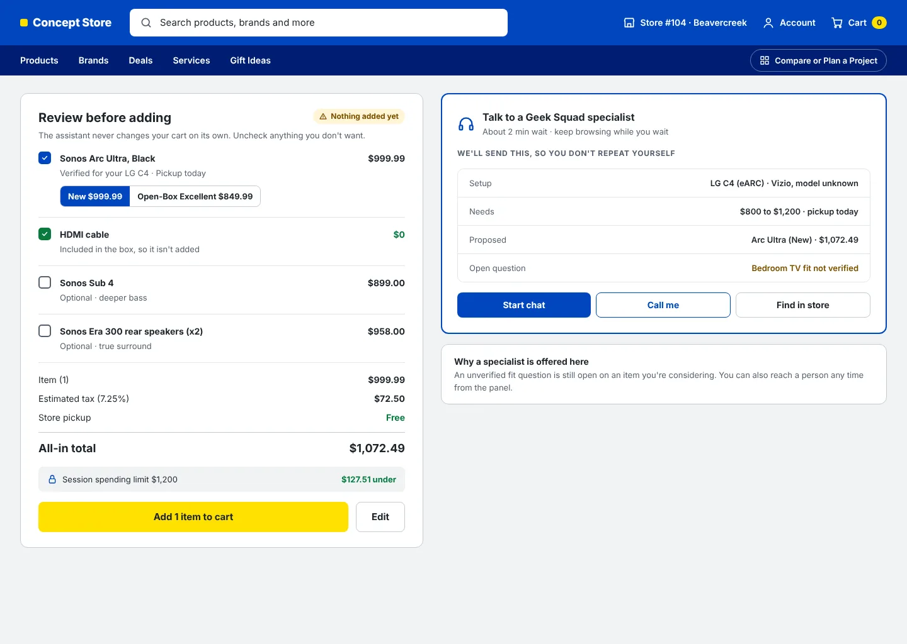
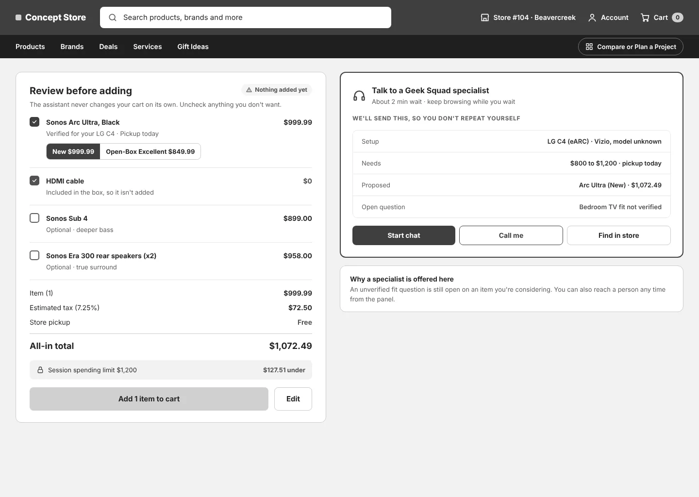

For Best Buy · Associate Experience Designer
Built for the visual side of the role
After our conversation, I took the role's emphasis on visual design and built a retail AI shopping assistant inside Best Buy's page patterns: seven key screens, a small design system and six clickable flows on web, tablet and mobile.
Self-initiated concept. Not affiliated with Best Buy, and it uses no internal information: product specs are public, store and inventory data are simulated.

What the role asks, what I did
Each area of the posting, matched to the work and where to see it
| From the posting | What I did | See it |
|---|---|---|
| Visual design and accessibility | One type scale (12 to 56 px), one spacing scale (4 to 48 px) and strict color roles. All 12 color pairs checked by script against WCAG AA; status shown with words and icons, never color alone; a visible keyboard focus ring. | Visual hierarchy |
| Established patterns, evolving the system | Kept the blue header, navigation and yellow purchase button. Added a context bar, verification badges, a review card and a proof receipt as documented components with tokens. | Design quality |
| Prototypes and user flows | Six end-to-end shopper tasks, each 6 steps, on web, tablet and mobile: 108 screens, wired as clickable Figma prototypes. | Web prototype |
| Small interaction components | Tap-to-answer pills, verified and can't-verify badges, a docked assistant, scroll cues, and a review card with nothing pre-selected, all fitted into existing product and checkout pages. | Case study |
| Edge cases and follow-up | Designed the can't-verify, conflicting-source, over-the-limit and sold-out-while-staged states, plus what to measure after launch: task completion, control use versus typing, mismatches caught, and AI overrides. | Case study |
The squint test
Blurred, the review screen still reads in the intended order: the yellow purchase button first, the blue Start chat second, then the card headings.


Thank you for your time :)
I'd love to walk you through it. manche.siddhi@gmail.com